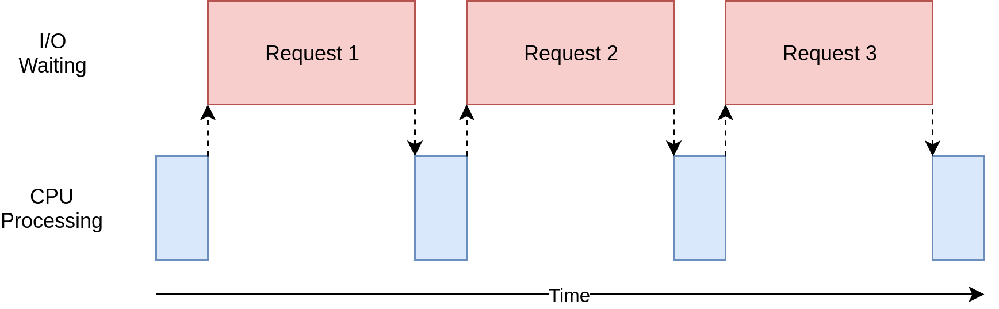
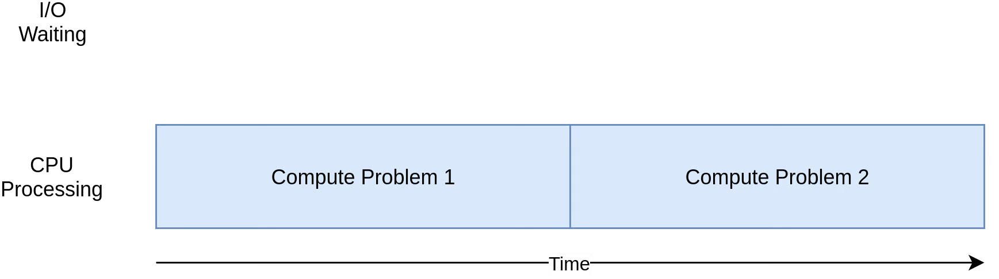
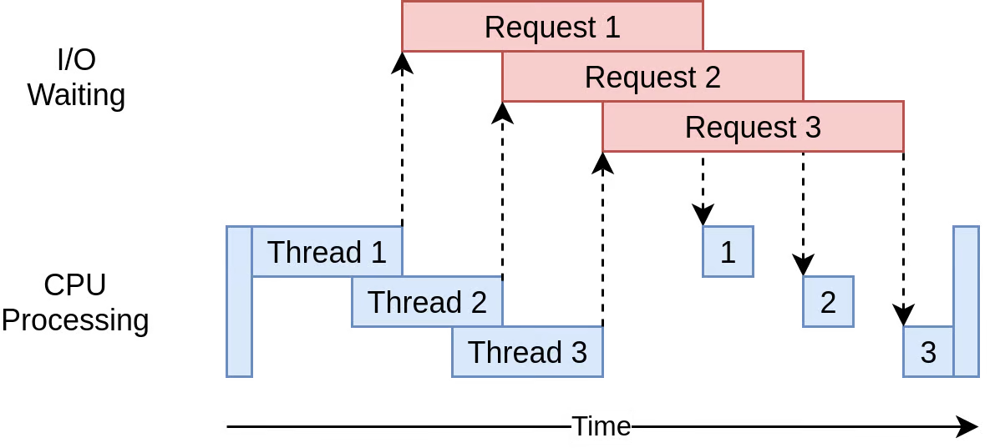
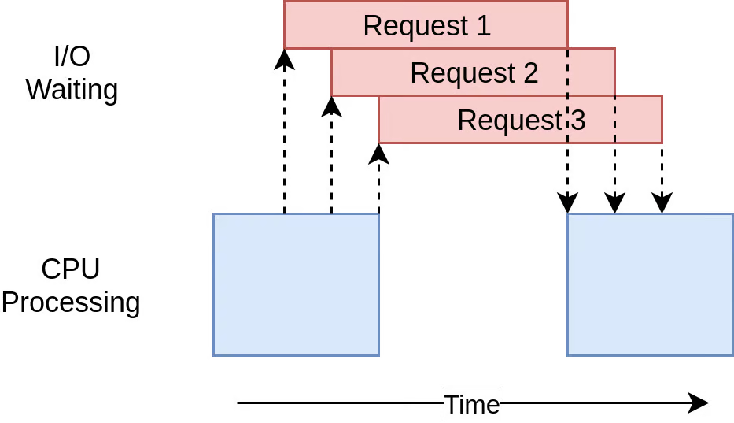
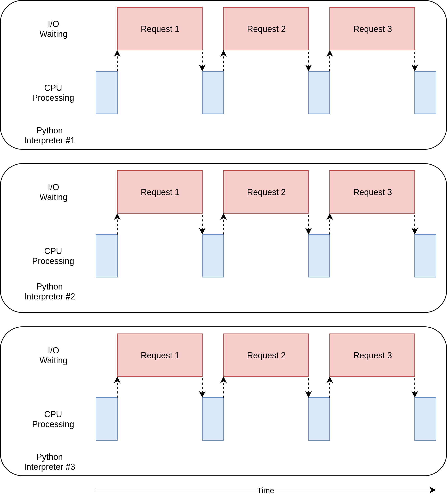

This blog post is organized as follows:
- First, we introduce core concepts of concurrency in Python (Section 1).
- Then, we discuss when and why to use concurrency (Section 2).
- Next, we explore how to speed up I/O-bound programs (Section 3) by comparing four approaches:
- Synchronous version
- Multi-threaded version
- Asynchronous version
- Process-based version
- Finally, we dive deep into asynchronous I/O with AsyncIO (Section 4).
Each section builds on the previous ones to provide a comprehensive understanding of Python concurrency.
This blog post is adapted from the Real Python - Python Concurrency and Real Python - Async IO in Python tutorials. While it summarizes the original content with some modifications and additions, proper attribution is given to Real Python, who retain the copyright of the original material and images. The content is shared for educational purposes.
All the code snippets in this blog post are regrouped inside the companion GitHub repository python-concurrency.
Exploring Concurrency in Python
This section introduces concurrency terminology. Concurrency can take different forms depending on the problem. The different concurrency models translate to Python in specific ways.
What Is Concurrency?
Concurrency is the simultaneous occurrence of events. In Python, these events are called:
- Thread
- Task
- Process
These all represent a sequence of instructions that run in order. They can be stopped, and the CPU can switch to a different one. The state of each sequence is saved so it can be restored.
Threads, tasks, and processes differ in their details. Multiple system processes can enable Python to run these sequences at the same time.
Threads and asynchronous tasks run on a single processor, meaning they run one at a time. They take turns to speed up the overall process.
In a multi-threaded approach, the operating system knows about each thread and can interrupt it to run a different thread. This is also true for processes and is called preemptive multitasking.
In preemptive multitasking, code in the thread doesn’t need to do anything special to make the switch. A context switch can happen in the middle of a Python statement. This is because Python statements consist of low-level bytecode instructions.
Asynchronous tasks use cooperative multitasking. The tasks cooperate by announcing when they’re ready to be switched out. The code in the task has to change to make this happen.
The benefit is that you know where your task will be swapped out, making it easier to understand the flow of execution. A task won’t be swapped out in the middle of a Python statement unless that statement is appropriately marked.
What Is Parallelism?
Parallelism involves executing separate processes, each running in its own Python interpreter.
Each process can run on a different CPU core. This means they can run at the same time.
Here’s a summary of Python modules for concurrency and parallelism:
| Python Module | CPU | Multitasking | Switching Decision |
|---|---|---|---|
asyncio |
One | Cooperative | The tasks decide when to give up control. |
threading |
One | Preemptive | The operating system decides when to switch tasks external to Python. |
multiprocessing |
Many | Preemptive | The processes all run at the same time on different processors. |
These modules will be explored in this blog post.
threading and multiprocessing are low-level building blocks. They can often be replaced with concurrent.futures, which provides a higher-level interface. asyncio offers a different approach to concurrency.
Each type of concurrency can be useful in its own way.
When is concurrency useful ?
Concurrency can be useful for two types of problems:
- I/O-Bound
- CPU-Bound
I/O-bound problems slow down your program because it waits for input or output (I/O) from an external resource. They occur when your program interacts with things that are slower than your CPU, such as the file system and network connections.

Blue boxes show work time, and red boxes show waiting time for I/O operations. Network requests can take longer than CPU instructions, so your program may spend most of its time waiting.
CPU-bound programs do significant computation without network or file access. The CPU limits the speed of your program. Here’s a diagram for a CPU-bound program:

Different forms of concurrency work better or worse with I/O-bound and CPU-bound programs. Adding concurrency introduces extra code and complications, so you need to decide if the speedup is worth the effort.
Here’s a summary:
| I/O-Bound Process | CPU-Bound Process |
|---|---|
| Your program spends most of its time talking to a slow device. | Your program spends most of its time doing CPU operations. |
| Speeding it up involves overlapping the times spent waiting for these devices. | Speeding it up involves finding ways to do more computations in the same amount of time. |
For I/O-bound programs, see Section 3 for detailed examples and timing comparisons. For CPU-bound programs, refer to the Real Python - Python Concurrency tutorial which covers CPU-intensive tasks in depth.
Speeding Up an I/O-Bound Program
This section focuses on I/O-bound programs and downloading content over the network. Web pages are used as an example, but it could be any network traffic.
Synchronous Version
This version doesn’t use concurrency:
import time
import requests
def main():
sites = [
"https://www.jython.org",
"http://olympus.realpython.org/dice",
] * 80
start_time = time.perf_counter()
download_all_sites(sites)
duration = time.perf_counter() - start_time
print(f"Downloaded {len(sites)} sites in {duration} seconds")
def download_all_sites(sites):
with requests.Session() as session:
for url in sites:
download_site(url, session)
def download_site(url, session):
with session.get(url) as response:
print(f"Read {len(response.content)} bytes from {url}")
if __name__ == "__main__":
main()This program downloads site contents from a list of addresses and prints their sizes. A session object from requests is used. Creating a Session object allows the library to retain state across requests and reuse the connection to speed things up. The session is created in download_all_sites() and then the list of sites is iterated through, downloading each one. Finally, the execution time is printed. Here’s an example of the final output:
$ python io_non_concurrent.py
Read 10966 from https://www.jython.org
Read 276 from http://olympus.realpython.org/dice
⋮
Downloaded 160 sites in 14.289619207382202 secondsThese results may vary depending on network conditions.
Multi-Threaded Version
Writing a multi-threaded program takes more effort. Here’s the same program using concurrent.futures and threading:
import threading
import time
from concurrent.futures import ThreadPoolExecutor
import requests
thread_local = threading.local()
def main():
sites = [
"https://www.jython.org",
"http://olympus.realpython.org/dice",
] * 80
start_time = time.perf_counter()
download_all_sites(sites)
duration = time.perf_counter() - start_time
print(f"Downloaded {len(sites)} sites in {duration} seconds")
def download_all_sites(sites):
with ThreadPoolExecutor(max_workers=5) as executor:
executor.map(download_site, sites)
def download_site(url):
session = get_session_for_thread()
with session.get(url) as response:
print(f"Read {len(response.content)} bytes from {url}")
def get_session_for_thread():
if not hasattr(thread_local, "session"):
thread_local.session = requests.Session()
return thread_local.session
if __name__ == "__main__":
main()The overall structure is the same.
A ThreadPoolExecutor is created to manage the threads. In this case, five workers or threads are requested. The correct number of threads is not constant from one task to another. With IO-bound problems, you’re not limited to the number of CPU cores. However, at some point, diminishing returns will occur due to the overhead of switching threads. Experimentation is recommended. A ThreadPoolExecutor creates a pool of threads, each of which can run concurrently. The executor controls how and when each of the threads in the pool will run. Using a thread pool can be beneficial when you have limited system resources but still want to handle many tasks.
In this version, the executor calls download_site() instead of doing it manually in a loop. The executor.map() method distributes the workload across the available threads. This method takes:
- A function to be executed on each data item
- A collection of data items to be processed by that function
Since the function passed to .map() must take one argument, download_site() was modified to only accept a URL.
Because the operating system controls when tasks get interrupted, any data shared between the threads needs to be thread-safe. requests.Session() isn’t thread-safe.
One strategy is to use a thread-safe data structure. Another strategy is to use thread-local storage. When threading.local() is called, an object that resembles a global variable but is specific to each individual thread is created.
When get_session_for_thread() is called, the session it looks up is specific to the particular thread on which it’s running. So each thread will create a session the first time it calls get_session_for_thread() and then will use that session on each subsequent call.
Here’s the output:
$ python io_threads.py
Read 10966 from https://www.jython.org
Read 276 from http://olympus.realpython.org/dice
⋮
Downloaded 160 sites in 3.190047219999542 secondsThis is faster than the non-concurrent version.
Here’s the execution timing diagram:

The program uses multiple threads to have many open requests out to web sites at the same time. It takes more code to make this happen, and you have to give some thought to what data is shared between threads. Threads can interact in ways that are subtle and hard to detect. These interactions can cause race conditions that frequently result in random, intermittent bugs that can be difficult to find.
Asynchronous Version
Using multithreading can cut down the total execution time. Python’s asyncio module enables asynchronous I/O and can be even faster.
Asynchronous processing is a concurrency model that’s suited for I/O-bound tasks. It avoids the overhead of context switching between threads by employing the event loop, non-blocking operations, and coroutines. Asynchronous code needs only one thread of execution to run concurrently.
The event loop controls how and when each asynchronous task gets to execute. It continuously loops through your tasks while monitoring their state. When the current task starts waiting for an I/O operation to finish, the loop suspends it and switches to another task. When the expected event occurs, the loop resumes the suspended task in the next iteration.
A coroutine is similar to a thread but more lightweight. You can spawn many more coroutines than threads without significant overhead.
Blocking function calls aren’t allowed in coroutines. A blocking call prevents other code from running while it’s waiting for data to arrive. A non-blocking call can give up control and wait to be notified when the data is ready.
In Python, you create a coroutine object by calling an asynchronous function, also known as a coroutine function. These are defined with the async def statement. Only within the body of an asynchronous function can you use the await keyword, which pauses the execution of the coroutine until the awaited task is completed:
import asyncio
async def main():
await asyncio.sleep(3.5)In this case, main() is defined as an asynchronous function. The await keyword makes a non-blocking call to asyncio.sleep(), simulating a delay. While main() awaits the wake-up event, other tasks could potentially run.
Note: To run the sample code above, you’ll need to either wrap the call to main() in asyncio.run() or await main() in Python’s asyncio REPL.
The Requests library is blocking, so a non-blocking counterpart, such as aiohttp, is needed. After installing this library, you can use it in the asynchronous version of the code:
import asyncio
import time
import aiohttp
async def main():
sites = [
"https://www.jython.org",
"http://olympus.realpython.org/dice",
] * 80
start_time = time.perf_counter()
await download_all_sites(sites)
duration = time.perf_counter() - start_time
print(f"Downloaded {len(sites)} sites in {duration} seconds")
async def download_all_sites(sites):
async with aiohttp.ClientSession() as session:
tasks = [download_site(url, session) for url in sites]
await asyncio.gather(*tasks, return_exceptions=True)
async def download_site(url, session):
async with session.get(url) as response:
print(f"Read {len(await response.read())} bytes from {url}")
if __name__ == "__main__":
asyncio.run(main())This version looks similar to the synchronous one.
Here are the main differences:
asynciois imported from Python’s standard library.- The
aiohttplibrary is imported. - Functions are redefined as asynchronous ones with the
asynckeyword. - The
awaitkeyword is prepended todownload_all_sites(). - The
async withstatement is leveraged to create asynchronous context managers. - A list of tasks is created using a list comprehension.
asyncio.gather()is used to run all the tasks concurrently.- The completion of the session’s HTTP GET request is awaited before printing.
The session is shared across all tasks because they’re all running on the same thread.
One of the advantages of asyncio is that it scales well. Each task takes fewer resources and less time to create than a thread.
The asynchronous version is the fastest:
$ python io_asyncio.py
Read 10966 bytes from https://www.jython.org
Read 10966 bytes from https://www.jython.org
⋮
Downloaded 160 sites in 0.49083488899850636 secondsHere’s the execution timing diagram:

Adding async and await can be a complication, but it forces you to think about when a given task will get swapped out. The asyncio example can be run with hundreds of tasks without slowing it down. You need special asynchronous versions of libraries to gain the full advantage of asyncio. If one of the tasks doesn’t cooperate, then all the advantages of cooperative multitasking get thrown away. See Section 4 for a deep dive into asynchronous I/O with AsyncIOs
Process-Based Version
The examples so far have run on a single CPU. The multiprocessing module was designed to break down that barrier and run your code across multiple CPUs. It does this by creating a new instance of the Python interpreter to run on each CPU. Bringing up a separate Python interpreter is a heavyweight operation. Unlike the previous approaches, using multiprocessing allows you to take full advantage of the all CPUs that your computer has. Here’s the sample code:
import atexit
import multiprocessing
import time
from concurrent.futures import ProcessPoolExecutor
import requests
session: requests.Session
def main():
sites = [
"https://www.jython.org",
"http://olympus.realpython.org/dice",
] * 80
start_time = time.perf_counter()
download_all_sites(sites)
duration = time.perf_counter() - start_time
print(f"Downloaded {len(sites)} sites in {duration} seconds")
def download_all_sites(sites):
with ProcessPoolExecutor(initializer=init_process) as executor:
executor.map(download_site, sites)
def download_site(url):
with session.get(url) as response:
name = multiprocessing.current_process().name
print(f"{name}:Read {len(response.content)} bytes from {url}")
def init_process():
global session
session = requests.Session()
atexit.register(session.close)
if __name__ == "__main__":
main()This looks similar to the multi-threaded example.
Here’s what this code does:
- A global variable is declared to hold the session object.
ThreadPoolExecutoris replaced withProcessPoolExecutorfromconcurrent.futuresandinit_process()is passed.- A custom initializer function is defined that each process will call shortly after starting.
- A cleanup function is registered with
atexit.
The pool creates a number of separate Python interpreter processes. The communication between the main process and the other processes is handled. The pool instance doesn’t specify how many processes to create. By default, it’ll determine the number of CPUs and match that. For an I/O-bound problem, increasing the number of processes won’t make things faster.
Note: If you need to exchange data between your processes, then it requires expensive inter-process communication (IPC) and data serialization.
Each process in the pool has its own memory space. They can’t easily share things like a session object. The initializer function parameter is built for this case. A global session variable can be initialized to hold the single session for each process.
Here’s the output:
$ python io_processes.py
ForkProcess-3:Read 10966 bytes from https://www.jython.org
ForkProcess-4:Read 276 bytes from http://olympus.realpython.org/dice
⋮
Downloaded 160 sites in 3.428215079999063 secondsOn a computer with four CPU cores, it runs about four times faster than the synchronous version. It’s slower than the multi-threaded version and much slower than the asynchronous version.
The execution timing diagram for this code looks like this:

There are separate processes executing in parallel. The diagrams of each one resemble the non-concurrent version. Multiprocessing is more useful for CPU-bound examples.
Asynchronous I/O with AsyncIO
Asynchronous programming offers an efficient way to create responsive applications, particularly for I/O-bound tasks. Python’s asyncio library, along with the async and await keywords, provides a framework for building concurrent applications. This section explores the core concepts of asyncio, illustrates use cases, and outlines considerations for its adoption.
Asynchronous I/O (AsyncIO) allows routines to pause while awaiting external operations (e.g., network requests, file reads) and permits other routines to execute. This improves efficiency by utilizing idle time.
Concurrency and parallelism are distinct. Concurrency makes multiple tasks appear to run simultaneously, even on a single core. Parallelism involves running multiple tasks at the same time, using multiple CPU cores. asyncio primarily facilitates concurrency using a single thread.
async and await Keywords
The async and await keywords are fundamental to asyncio.
async def: Defines a coroutine, a function that can be suspended and resumed.await: Pauses execution inside a coroutine until an awaitable object (another coroutine or aFuture) completes. When a coroutine encountersawait, it yields control back to the event loop.
async def f(x):
y = await z(x) # OK - `await` and `return` allowed in coroutines
return y
async def g(x):
yield x # OK - this is an async generatorA function defined with async def is a coroutine. It may use await, return, or yield, but all are optional.
Using await and/or return creates a coroutine function. To call a coroutine function, you must await it to get its results. It is less common to use yield in an async def block. This creates an asynchronous generator, iterated over with async for. Anything defined with async def may not use yield from, which will raise a SyntaxError.
Example:
import asyncio
async def my_coroutine():
print("Coroutine started")
await asyncio.sleep(1) # Simulate an I/O operation
print("Coroutine finished")
async def main():
await my_coroutine()
if __name__ == "__main__":
asyncio.run(main())This code demonstrates:
my_coroutineis defined as anasyncfunction, making it a coroutine.await asyncio.sleep(1)pauses the coroutine for 1 second, simulating an I/O operation. The event loop can schedule other coroutines.asyncio.run(main())starts the event loop and runs themaincoroutine.
Asynchronous vs. Synchronous Execution in Python: A Comparison
This section compares the execution time of asynchronous and synchronous code in Python using a simple example. The example consists of a count function that prints “One”, waits for 1 second, and then prints “Two”. We execute this function three times, once using asyncio for asynchronous execution and once using a simple for loop for synchronous execution.
Asynchronous Example
import asyncio
import time
async def count():
print("One")
await asyncio.sleep(1)
print("Two")
async def main():
await asyncio.gather(count(), count(), count())
if __name__ == "__main__":
s = time.perf_counter()
asyncio.run(main())
elapsed = time.perf_counter() - s
print(f"{__file__} executed in {elapsed:0.2f} seconds.")Explanation:
async def count():defines an asynchronous function. Theawait asyncio.sleep(1)line allows the event loop to switch to other tasks while waiting for the sleep to complete, enabling concurrency.async def main():defines another asynchronous function that usesasyncio.gather()to run three instances ofcount()concurrently.asyncio.gather()ensures that all provided awaitables complete before it returns.asyncio.run(main())starts the asyncio event loop and runs themain()function.
Output:
$ python countasync.py
One
One
One
Two
Two
Two
countasync.py executed in 1.01 seconds.As observed, the execution time is approximately 1 second. This is because all three count() functions are executed concurrently. The asyncio.sleep(1) calls allow the event loop to switch between the functions, effectively overlapping the wait times. The small amount over 1 second likely represents overhead from the asyncio event loop and the print function.
Synchronous Example
import time
def count():
print("One")
time.sleep(1)
print("Two")
def main():
for _ in range(3):
count()
if __name__ == "__main__":
s = time.perf_counter()
main()
elapsed = time.perf_counter() - s
print(f"{__file__} executed in {elapsed:0.2f} seconds.")Explanation:
def count():defines a regular synchronous function.time.sleep(1)pauses the execution of the current thread for 1 second. No other code can execute during this time.def main():calls thecount()function three times in a loop. Each call blocks until it completes.
Output:
$ python3 countsync.py
One
Two
One
Two
One
Two
countsync.py executed in 3.01 seconds.As observed, the execution time is approximately 3 seconds. This is because each count() function call takes 1 second of sleep time, and the functions are executed sequentially.
Components of asyncio
- Event Loop: Manages coroutine execution and I/O events.
asyncio.run()creates and manages it. - Coroutines: Functions defined with
async defthat can be suspended and resumed. - Tasks: Represent a coroutine scheduled to run in the event loop, created using
asyncio.create_task(). Tasks are essential for running coroutines concurrently. - Futures: Represent the result of an asynchronous operation. Coroutines may
awaitFutures, allowing them to wait for the completion of an asynchronous operation without blocking the entire program. - Queues:
asyncioprovides queue classes (asyncio.Queue) similar to the standardqueue.Queuebut designed for asynchronous use. Queues are useful for coordinating communication between coroutines.
The Event Loop
The event loop monitors coroutines, identifies idle coroutines, and schedules executable tasks. It wakes up idle coroutines when their awaited resources become available.
asyncio.run() manages the event loop implicitly:
asyncio.run() obtains the event loop, runs tasks until completion, and then closes the loop.
Key points about the event loop:
- Coroutines require the event loop to execute.
- By default, an AsyncIO event loop runs in a single thread and on a single CPU core, which is often sufficient.
There’s a more long-winded way of managing the asyncio event loop, with get_event_loop(). The typical pattern looks like this and is taken from llama-index async_utils.py.
def asyncio_run(coro: Coroutine) -> Any:
"""Gets an existing event loop to run the coroutine.
If there is no existing event loop, creates a new one.
"""
try:
# Check if there's an existing event loop
loop = asyncio.get_event_loop()
# If we're here, there's an existing loop but it's not running
return loop.run_until_complete(coro)
except RuntimeError as e:
# If we can't get the event loop, we're likely in a different thread, or its already running
# asyncio.get_event_loop() raises RuntimeError if there's no running loop in the current thread.
try:
# If the first attempt failed, try creating and running a new event loop.
return asyncio.run(coro) # asyncio.run() creates a new event loop, runs the coroutine, and closes the loop.
except RuntimeError as e:
# If asyncio.run() also raises RuntimeError, it likely means there's a nested asyncio call.
raise RuntimeError(
"Detected nested async. Please use nest_asyncio.apply() to allow nested event loops."
"Or, use async entry methods like `aquery()`, `aretriever`, `achat`, etc."
)This function aims to run an asyncio coroutine. It first tries to get the current event loop. If one exists and is not running, it runs the coroutine in that loop. If getting the current loop fails (RuntimeError), it means there’s no running loop in the current thread. In that case, it tries to create a new loop using asyncio.run(). If creating a new loop also fails (another RuntimeError), it likely indicates a nested asyncio scenario (trying to run asyncio code within already running asyncio code). The error suggests using nest_asyncio or asynchronous alternatives to avoid nested loops. Nesting is generally discouraged in asyncio. nest_asyncio allows nesting, but it can lead to unexpected behavior. It is generally recommended to re-factor code that uses nested async calls.
AsyncIO Examples in Practice
Chained Coroutines
import asyncio
import random
import time
async def part1(n: int) -> str:
i = random.randint(0, 10)
print(f"part1({n}) sleeping for {i} seconds.")
await asyncio.sleep(i)
result = f"result{n}-1"
print(f"Returning part1({n}) == {result}.")
return result
async def part2(n: int, arg: str) -> str:
i = random.randint(0, 10)
print(f"part2{n, arg} sleeping for {i} seconds.")
await asyncio.sleep(i)
result = f"result{n}-2 derived from {arg}"
print(f"Returning part2{n, arg} == {result}.")
return result
async def chain(n: int) -> None:
start = time.perf_counter()
p1 = await part1(n)
p2 = await part2(n, p1)
end = time.perf_counter() - start
print(f"-->Chained result{n} => {p2} (took {end:0.2f} seconds).")
async def main(*args):
await asyncio.gather(*(chain(n) for n in args))
if __name__ == "__main__":
import sys
random.seed(444)
args = [1, 2, 3] if len(sys.argv) == 1 else map(int, sys.argv[1:])
start = time.perf_counter()
asyncio.run(main(*args))
end = time.perf_counter() - start
print(f"Program finished in {end:0.2f} seconds.")Example output:
$ python3 chained.py 9 6 3
part1(9) sleeping for 4 seconds.
part1(6) sleeping for 4 seconds.
part1(3) sleeping for 0 seconds.
Returning part1(3) == result3-1.
part2(3, 'result3-1') sleeping for 4 seconds.
Returning part1(9) == result9-1.
part2(9, 'result9-1') sleeping for 7 seconds.
Returning part1(6) == result6-1.
part2(6, 'result6-1') sleeping for 4 seconds.
Returning part2(3, 'result3-1') == result3-2 derived from result3-1.
-->Chained result3 => result3-2 derived from result3-1 (took 4.00 seconds).
Returning part2(6, 'result6-1') == result6-2 derived from result6-1.
-->Chained result6 => result6-2 derived from result6-1 (took 8.01 seconds).
Returning part2(9, 'result9-1') == result9-2 derived from result9-1.
-->Chained result9 => result9-2 derived from result9-1 (took 11.01 seconds).
Program finished in 11.01 seconds.part1() sleeps for a variable time, and part2() starts as results become available. This example demonstrates how asyncio.gather can run multiple coroutines concurrently, and how await ensures that the second coroutine in each chain only runs after the first has completed. Each chain function represents an independent, sequential process. The final result showcases the execution time of individual chains and the total program execution time. Note that the total program time is roughly the longest individual chain time, demonstrating concurrency.
Producer/Consumer Pattern with asyncio.Queue
import asyncio
import itertools as it
import os
import random
import time
async def makeitem(size: int = 5) -> str:
return os.urandom(size).hex()
async def randsleep(caller=None) -> None:
i = random.randint(0, 10)
if caller:
print(f"{caller} sleeping for {i} seconds.")
await asyncio.sleep(i)
async def produce(name: int, q: asyncio.Queue) -> None:
n = random.randint(0, 10)
for _ in it.repeat(None, n): # Synchronous loop for each single producer
await randsleep(caller=f"Producer {name}")
i = await makeitem()
t = time.perf_counter()
await q.put((i, t))
print(f"Producer {name} added <{i}> to queue.")
async def consume(name: int, q: asyncio.Queue) -> None:
while True:
await randsleep(caller=f"Consumer {name}")
i, t = await q.get()
now = time.perf_counter()
print(f"Consumer {name} got element <{i}>"
f" in {now-t:0.5f} seconds.")
q.task_done()
async def main(nprod: int, ncon: int):
q = asyncio.Queue()
producers = [asyncio.create_task(produce(n, q)) for n in range(nprod)]
consumers = [asyncio.create_task(consume(n, q)) for n in range(ncon)]
await asyncio.gather(*producers)
await q.join() # Implicitly awaits consumers, too
for c in consumers:
c.cancel()
if __name__ == "__main__":
import argparse
random.seed(444)
parser = argparse.ArgumentParser()
parser.add_argument("-p", "--nprod", type=int, default=5)
parser.add_argument("-c", "--ncon", type=int, default=10)
ns = parser.parse_args()
start = time.perf_counter()
asyncio.run(main(**ns.__dict__))
elapsed = time.perf_counter() - start
print(f"Program completed in {elapsed:0.5f} seconds.")Output
$ python3 asyncq.py -p 2 -c 2
Producer 0 sleeping for 2 seconds.
Producer 1 sleeping for 2 seconds.
Consumer 0 sleeping for 2 seconds.
Consumer 1 sleeping for 4 seconds.
Producer 0 added <50679576b9> to queue.
Producer 0 sleeping for 3 seconds.
Producer 1 added <413dd61b37> to queue.
Consumer 0 got element <50679576b9> in 0.00015 seconds.
Consumer 0 sleeping for 1 seconds.
Producer 1 added <1b64e8bb2f> to queue.
Consumer 1 got element <413dd61b37> in 0.00012 seconds.
Consumer 1 sleeping for 5 seconds.
Producer 1 added <413dd61b37> to queue.
Consumer 0 got element <1b64e8bb2f> in 0.00009 seconds.
Consumer 0 sleeping for 5 seconds.
Program completed in 7.02420 seconds.This example illustrates the producer-consumer pattern using asyncio.Queue. Multiple producers generate random items and place them in the queue, while multiple consumers retrieve items from the queue and process them. asyncio.Queue handles synchronization between producers and consumers, ensuring that consumers don’t try to retrieve items from an empty queue and that producers don’t overwhelm the consumers. The q.join() method ensures that the main function waits until all items in the queue have been processed before canceling the consumers and exiting. The producers are stopped when they are finished producing items, while the consumers are stopped after the queue is emptied, preventing an infinite loop. The time elapsed between item production and consumption is measured, demonstrating the efficiency of the asynchronous queue in handling concurrent operations.
Some Utility Functions from Llama-Index for Handling Asynchronous Tasks
This section presents three utility functions from the llama-index library that help manage asynchronous tasks in different ways:
- A function to execute a list of async tasks (with optional progress bar)
- A function to run tasks in batches to avoid memory issues
- A function to run tasks with a limited number of workers
These functions build on the core asyncio concepts covered earlier and provide practical solutions for common async programming needs.
def run_async_tasks(
tasks: List[Coroutine],
show_progress: bool = False,
progress_bar_desc: str = "Running async tasks",
) -> List[Any]:
"""Run a list of async tasks."""
tasks_to_execute: List[Any] = tasks
if show_progress:
try:
import nest_asyncio
from tqdm.asyncio import tqdm
# jupyter notebooks already have an event loop running
# we need to reuse it instead of creating a new one
nest_asyncio.apply()
loop = asyncio.get_event_loop()
async def _tqdm_gather() -> List[Any]:
return await tqdm.gather(*tasks_to_execute, desc=progress_bar_desc)
tqdm_outputs: List[Any] = loop.run_until_complete(_tqdm_gather())
return tqdm_outputs
# run the operation w/o tqdm on hitting a fatal
# may occur in some environments where tqdm.asyncio
# is not supported
except Exception:
pass
async def _gather() -> List[Any]:
return await asyncio.gather(*tasks_to_execute)
outputs: List[Any] = asyncio_run(_gather())
return outputsThis function runs a list of asynchronous tasks concurrently using asyncio.gather().
- It takes a list of coroutines (tasks), a boolean to show progress, and an optional progress bar description.
- If
show_progressisTrue, it attempts to usetqdm.asyncioto display a progress bar.- It uses
nest_asyncio.apply()to handle cases where the code is running in an environment like Jupyter notebooks, which already have an event loop. - It defines an inner coroutine
_tqdm_gather()that usestqdm.gather()to run the tasks and display the progress. - It runs
_tqdm_gather()usingasyncio_run(). - If any exception occurs during the tqdm process (e.g.,
tqdm.asynciois not supported), it falls back to running the tasks without a progress bar.
- It uses
- If
show_progressisFalseor the tqdm process fails, it defines an inner coroutine_gather()that usesasyncio.gather()to run the tasks concurrently. - It runs
_gather()usingasyncio_run(). - It returns a list of the results from the completed tasks.
def chunks(iterable: Iterable, size: int) -> Iterable:
args = [iter(iterable)] * size
return zip_longest(*args, fillvalue=None)
async def batch_gather(
tasks: List[Coroutine], batch_size: int = 10, verbose: bool = False
) -> List[Any]:
output: List[Any] = []
for task_chunk in chunks(tasks, batch_size):
task_chunk = (task for task in task_chunk if task is not None)
output_chunk = await asyncio.gather(*task_chunk)
output.extend(output_chunk)
if verbose:
print(f"Completed {len(output)} out of {len(tasks)} tasks")
return outputThe function chunks splits an iterable into chunks of a specified size.
- It takes an iterable and the desired chunk size as input.
- It creates multiple iterators from the input iterable using
[iter(iterable)] * size. - It uses
zip_longest()to group elements from these iterators into tuples, effectively creating the chunks. - The
fillvalue=Noneargument ensures that shorter chunks are padded withNoneif the input iterable is not evenly divisible by the chunk size. - The function returns an iterator that yields the chunks. For example,
chunks([1, 2, 3, 4, 5, 6, 7], 3)will return[(1, 2, 3), (4, 5, 6), (7, None, None)]
The function batch_gather runs a list of asynchronous tasks in batches.
- It takes a list of coroutines (tasks), a batch size, and a boolean for verbose output.
- It uses the
chunks()function to split the tasks into batches. - For each batch (
task_chunk), it filters out anyNonevalues (which might have been added bychunks()due to padding). - It uses
asyncio.gather()to run the tasks in the current batch concurrently. - The results from each batch are added to the output list.
- If
verboseisTrue, it prints a message indicating how many tasks have been completed so far. - The function returns a list of the results from all the completed tasks. This is useful when you have a very large list of coroutines, as sending them all to
asyncio.gathercould result in memory errors.
async def run_jobs(
jobs: List[Coroutine[Any, Any, T]],
show_progress: bool = False,
workers: int = DEFAULT_NUM_WORKERS,
desc: Optional[str] = None,
) -> List[T]:
"""Run jobs.
Args:
jobs (List[Coroutine]):
List of jobs to run.
show_progress (bool):
Whether to show progress bar.
Returns:
List[Any]:
List of results.
"""
semaphore = asyncio.Semaphore(workers)
async def worker(job: Coroutine) -> Any:
async with semaphore:
return await job
pool_jobs = [worker(job) for job in jobs]
if show_progress:
from tqdm.asyncio import tqdm_asyncio
results = await tqdm_asyncio.gather(*pool_jobs, desc=desc)
else:
results = await asyncio.gather(*pool_jobs)
return resultsThis function runs a list of asynchronous jobs (coroutines) with a specified number of workers and optional progress tracking.
- It uses a semaphore to limit the number of concurrent workers.
- It defines an inner coroutine
worker()that acquires the semaphore before running a job and releases it afterward, ensuring that only a limited number of jobs run concurrently. - It creates a list of worker tasks (
pool_jobs) by mapping each job to theworker()coroutine. - If
show_progressisTrue, it usestqdm_asyncio.gather()to run the worker tasks and display a progress bar. - If
show_progressisFalse, it usesasyncio.gather()to run the worker tasks concurrently without a progress bar. - The function returns a list of the results from the completed jobs. This is useful when you want to limit the number of concurrent asyncio tasks being run, perhaps because of rate limiting by an API, or resource constraints on your system.
Considerations for Using asyncio
asyncio is suitable for I/O-bound tasks:
- Network applications: web servers, chat applications, API clients.
- Web scraping: fetching data from multiple websites concurrently.
- Real-time applications: handling asynchronous events and data streams.
It is not appropriate for CPU-bound tasks like complex calculations or image processing. For CPU-bound tasks, consider multiprocessing.
Advantages of asyncio
- Efficiency: Reduces blocking and increases resource utilization.
- Scalability: Handles concurrent connections with limited overhead.
- Concurrency with a single thread: Reduces multithreading complexities.
Conclusion
In conclusion, Python provides diverse concurrency options to address different performance bottlenecks. For I/O-bound operations, where programs spend considerable time waiting for external resources, techniques like multi-threading and, especially, asynchronous I/O with asyncio can dramatically improve performance by overlapping wait times. asyncio allows for concurrent execution within a single thread, minimizing overhead and maximizing efficiency through cooperative multitasking.
In contrast, CPU-bound operations, which are limited by processing power, may benefit from parallelism using the multiprocessing module. This approach leverages multiple CPU cores to execute tasks simultaneously, although it introduces inter-process communication overhead. While threading offers a middle ground, it is subject to the Global Interpreter Lock (GIL) in CPython, limiting its effectiveness for CPU-bound tasks. Choosing the appropriate concurrency model depends on the specific nature of the problem.
Citation
@online{brosse2025,
author = {Brosse, Nicolas},
title = {Python {Concurrency}},
date = {2025-02-26},
url = {https://nbrosse.github.io/posts/py-concurrency/py-concurrency.html},
langid = {en}
}